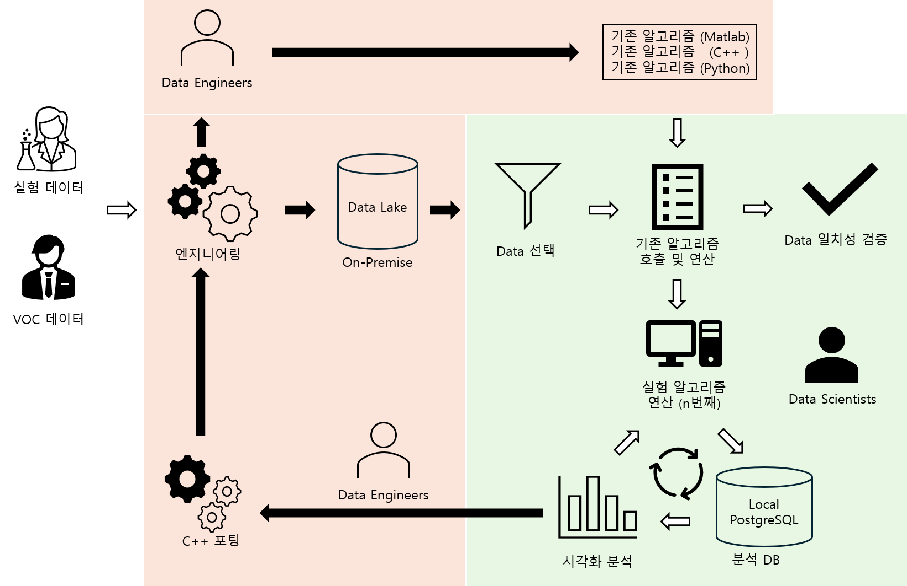

This project is to improve the baseline-fitting performance of the diagnostic signal processing algorithms.
Author
Kwangmin Kim
Published
July 8, 2024
1 Background
1.1 Real Time PCR의 원리
Real Time PCR 장비는 핵산(Nucleic Acid) 검체의 존재 여부를 확인하기 위해 각 사이클마다 핵산 검체를 2배씩 증폭하면서 신호를 감지한다.
Lag Phase (지연 단계): 증폭된 검체의 신호가 일정 농도 이하일 경우, PCR 장비는 신호를 감지하지 못하고, 장비 내부 기본값과 시약 및 소모품의 값이 합산된 신호로 반환한다. 이는 일정 시간 동안 지연되는 구간이다.
Log Phase (로그 단계): Exponential Phase라고도 불리며 증폭된 검체의 신호가 일정 농도 이상일 때, PCR 장비에서는 신호의 변화가 나타나며, 포화 상태에 이를 때까지 신호가 2의 지수승으로 증가한다.
Plateau Phase (플라토 단계): Stationary Phase 효소의 활성도 감소 및 반응물의 고갈 등으로 인해 포화 상태에 도달하면, 신호는 더 이상 증가하지 않고 일정하게 유지된다.
이러한 방식으로 Real Time PCR 장비의 신호는 이론적으로 sigmoid curve의 패턴을 나타낸다.
양/음성 결과
양성: 아래 그림과 같이 Real Time PCR 결과가 명확한 sigmoid curve가 나올 경우 검체가 발견된 양성 상태로 판독한다.
음성: 반응이 없는 평평한 curve가 나오거나 명확한 sigmoid curve가 나오지 않을 경우 검체가 발견되지 않은 음성 상태로 판독한다.
Ct
Ct 값은 Cycle threshold의 약자로, 특정한 양의 증폭된 DNA가 처음으로 검출 가능한 수준에 도달했을 때의 PCR 사이클 수를 의미한다
초기 DNA 양: Ct 값은 초기 DNA 양과 반비례한다.
증폭 효율성: Ct 값은 증폭 효율성과 관련 있다. 이상적으로는 각 사이클에서 두 배로 증폭되지만, 실제 실험에서는 다양한 요인에 의해 증폭 효율성이 100% 미만일 수 있다.
Sigmoid Curve Example
1.2 Risk
PCR 신호는 시험관 내에서 일어나는 미시적 화학 반응, 광학 반응 및 기계적 반응의 결과이다. 이 과정에서 인간이 명확히 측정하거나 설명하기 어려운 원인에 의한 노이즈가 섞일 수 있다. 이로 인해 Ct 값의 편향과 결과적으로 위양성 또는 위음성 결과가 발생할 위험이 증가할 수 있다.
1.3 PCR 신호처리 및 최종 출력물
따라서, 이러한 노이즈를 보정하기 위한 전처리 방법이 필요하다. 전처리 후, 진단 알고리즘은 검체의 존재 여부와 Ct 값을 시그모이드 곡선 적합을 통해 최종 출력한다.
2 Rationale
sigmoid curve fitting 전의 전처리 단계인 baseline subtraction의 정확도가 매우 중요하다.
Baseline 데이터에 노이즈가 많을 경우, 최적화 과정에서 과적합이나 local minima와 같은 문제로 인해 파라미터 추정의 복잡성이 증가한다.
Baseline subtraction의 정확도가 떨어질 경우 위양성/위음성의 위험이 있다.
사내에 표준화된 baseline fitting 알고리즘이 없어 여러 baseline fitting 알고리즘이 존재한다.
3 Motivation
회사에 처음 입사했을 때, 진단 알고리즘의 수많은 if문과 설정값, 그리고 해석하기 어려운 코드에 압도되었다. rule-based 알고리즘이 data-driven 알고리즘에 비해 성능이 떨어진다고는 할 수 없지만, 변화무쌍한 PCR 신호를 조건문으로 처리하기에는 한계가 있다고 판단했다. 따라서, 점진적으로 진단 알고리즘을 data-driven 방식으로 개선할 필요가 있다고 생각했다.
4 Considerations
보수적인 biologists와 전문적 지식이 없는 임원진을 이해시킬 수 있는 간단한 알고리즘이어야 한다.
현재의 진단 알고리즘은 수 많은 조건문으로 이루어진 rule-based 알고리즘이기 때문에 전체적인 알고리즘 수정 시 정합성 및 규제 문제가 발생할 수 있다. 따라서, baseline fitting 알고리즘만 개선하여 대체해야 한다.
통계를 전공하지 않은 알고리즘 관리자1 (Computer Science 전공), 관리자2 (Physics 전공)가 이해할 수 있도록 알고리즘 평가 metric을 선정 및 설명할 수 있어야한다.
Python으로 작성된 알고리즘을 C++로 porting을 해야만하기 때문에 최소한의 package를 사용하여 알고리즘을 low level로 coding해야한다.
Lag Phase에서의 baseline data points 수가 적을 수 있으므로, 적은 데이터로도 fitting할 수 있는 알고리즘이 필요하다.
baseline의 noise 패턴은 매우 다양하지만 기존의 legacy baseline fitting 알고리즘은 1차 곡선과 2차 곡선으로 fitting 한다. 따라서, 다양한 noise 패턴에 대응할 수 있는 알고리즘이 필요하다.
4.1 Issues
신호 데이터 선정 기준 부재
기존 방식: 1년 동안 기존 담당자가 주먹구구식으로 파일을 열어가며 주관적 느낌으로 타사 SW를 통해 특이한 신호를 육안 및 수동으로 찾음.
기존 방식 고수: 기존 방식으로 프로젝트 진행할 경우 너무 많은 소요 시간이 발생하여 프로젝트의 종결이 보이지 않음
데이터 파이프라인 부재
성능 평가 기준과 방법 부재
어렵지 않고 보수적인 biologists가 알고리즘 성능을 쉽게 이해할 수 있도록 시각화를 하지만 기획자가 부재
4.2 Solutions to Issues
신호 선정 메트릭 설정 후 활용하도록 복수 신호를 시각화 제시하여 설득
알고리즘 성능 평가 메트릭 설정
생물학자들, 알고리즘 관리자1(물리학 전공), 알고리즘 관리자2 (컴퓨터 공학 전공), 팀장과의 피드백 소통으로 시각화 개선
5 Required Skills
Statistics
Python
6 Colaborators
3 data scientists (I am a project manager.)
2 data enineers
2 biologists
7 Objective
noise를 보정하는 대표적인 전처리 방식 중 하나인 baseline 차감 알고리즘을 최적화한다. Baseline의 차감은 baseline fitting을 수행하여 fitted value를 raw data에서 차감하여 순수 신호를 분리한다.
우수한 성능을 보이는 basline fitting 알고리즘을 정하고 baseline fitting 알고리즘을 단일화를 한다.
Noise: 장비, 장비의 결함, 소모품 및 시약에서 방출하는 형광신호와 같은 기대하지 않은 반응에 의한 신호
Error: 다른 설명할 수 없는 요인으로 인하여 발생한 신호
7.1 Goals
Baseline 알고리즘 별 PCR 판독 결과 Data 마련을 위한 Data Engineering
Baseline 알고리즘 성능 비교 분석을 위한 data 처리 pipeline 구축
Baseline 알고리즘 성능 비교 분석이 가능한 시각화 기획 및 구현
Baseline 알고리즘 성능 비교 분석을 위한 비교 metric 고안 및 구현
Baseline 알고리즘 성능 비교 분석을 위한 신호 selection metric 고안 및 구현
Baseline 알고리즘 성능 비교 분석을 위한 신호 처리 세부 분석 시각화 기획 및 구현
시각화를 이용한 Baseline 알고리즘 개선
기존 및 새로운 baseline fitting 알고리즘들의 성능을 평가 및 비교한다.
음성 신호에 한하여 위양성 결과를 최소화하기 위해 baseline 차감 알고리즘을 최적화하여 여러 baseline fitting 알고리즘을 단일화한다.
8 Method
8.1 Data Pipeline

Data Pipeline
8.2 알고리즘 종류
비전공자인 생물학자, 컴퓨터 공학출신들과 임원들의 이해도를 높이기 위해 직관적으로 이해할 수 있는 시각화를 통해 각 알고리즘을 비교 분석한다.
Legacy 알고리즘 1 (rule-based): 대조군1, 현재 Data Science팀에서 사용되고있는 공식적인 알고리즘
Bio Legacy 알고리즘 2 (rule-based): 대조군2, 생물 실험자들이 제품을 최적화하기 위해 현재 사용하고있는 알고리즘
Black Box 알고리즘 3 (black box): 대조군3, 업계 1위 타사의 알고리즘으로 기기전용 SW에 내재된 알고리즘으로 Black Box이지만 SW내에서 차감결과 data는 얻을 수 있다.
Rule-Based 알고리즘 4 (rule-based): 실험군1, 팀원(물리학자)이 Legacy 알고리즘 1을 보완하기 위해 만든 알고리즘
Rule-Based+N알고리즘 5 (rule-based): 실험군2, 팀원(물리학자)이 Legacy 알고리즘 1을 보완하기 위해 만든 n번째 알고리즘
ML 알고리즘 6 (data-driven): 실험군3, 본인이 만든 data driven ML알고리즘
Baseline Fitting with a Characteristic Equation: 경험상으로 Baseline 신호가 여러 요인으로 다양한 패턴을 보인다. Talyer Series에서 초월 함수를 다항식의 조합으로 근사할 수 있다는 점에서 착안하여, 다항식 기저 함수를 사용한 선형 회귀로 데이터를 적합하는 방법을 시도했다. 이 접근법은 데이터의 feature space를 확장하고, 데이터 내 복잡한 비선형 관계를 모델링할 수 있게 한다. 적절한 차수 선택과 정규화를 통해 baseline 신호에 적합시킨다.
Neural Network: Characteristic Equation (특성 방정식)은 기저함수를 분석가가 선정해줘야 하는 위험 부담이 있다. Baseline 신호가 실험 단계에서 흔하게 보이는 패턴에 맞게 기저함수를 설정할 수 있지만 임상신호나 실제 시장에서 만들어지는 신호는 그 패턴이 예상과 다를 수 있기 때문에 Data에 맞게 적합가능한 간단한 신경망을 구현하여 적합시킨다.
8.3 시각화에 의한 직관적 분석
baseline data를 관찰 및 기존의 경험으로 알고있는 다양한 신호 패턴에 각 알고리즘들이 어떤 성능을 보이는지 비교한다.
복수 신호에 대한 성능 평가: 알고리즘의 총체적인 성능평가를 관찰 및 분석
단일 신호에 대한 성능 평가: 특이 신호에 대한 알고리즘이 어떤 성능을 보이는지 세부적으로 관찰 및 분석
Baseline 증가 신호에 대한 성능 평가: 증가 신호에 대해서 알고리즘들이 어떤 성능을 보이는지 관찰 및 분석
Baseline 감소 신호에 대한 성능 평가: 감소 신호에 대해서 알고리즘들이 어떤 성능을 보이는지 관찰 및 분석
제품 특이적인 신호에 대한 성능 평가: 씨젠의 제품과 BT기술에 의한 신호처리 후 신호 패턴에 대하여 어떤 성능을 보이는지 관찰 및 분석
8.4 평가 Metric
MSE: mean squared error
MAE: mean absolute error
차감 결과가 white noise에 가까워야 성공적인 fitting인 것으로 간주
9 Result
9.1 Import Packages
Code
# import packagesimport polars as pl# Analysis Preparationimport pandas as pdimport numpy as np# PreProcessingimport pprintimport pyarrow as paimport osimport subprocessfrom pathlib import Pathfrom source.preprocess import (main_function, load_and_prepare_parquet, get_column_percentiles, process_column_for_outliers, compute_lm_slope, check_memory_status, get_disk_usage, get_package_details)from source.signal_filter import (detect_noise_naively, detect_noise_naively_ver2, detect_noise_naively_ywj1, detect_noise_naively_pbg, detect_noise_naively_kkm, compute_autocorrelation, test_white_noise)# Visualizationimport plotly.express as pximport matplotlib.pyplot as pltfrom source.visualization import (find_sub_extremes, find_global_extremes, get_comparison_metrics, compute_bpn, plot_baseline_subtractions, plot_single_well, plot_signal_patterns)# pandas 출력 옵션 설정#pd.set_option('display.max_rows', None) # 모든 행 출력#pd.set_option('display.max_columns', None) # 모든 열 출력#pd.set_option('display.width', 1000) # 셀 너비 설정#pd.set_option('display.max_colwidth', None) # 열 내용 전체 출력import warningswarnings.filterwarnings("ignore")
직관적인 알고리즘 성능 비교 분석 제공, 정량적 성능 평가를 위한 비교 metric 생성 및 알고리즘 성능 개선에 대한 insights 제공 알고리즘 성능 비교 분석이 가능한 시각화를 제공 및 프로젝트 관련 동료에게 실무적 도움을 제공
11 Acheivements
Output
Description
12 Long Term Project
알고리즘 Verification and Validation
13 Background
Due to the nature of reagent products related to medical device, there are regulations required by each country’s government for the health and life safety of its citizens when entering the global market.
Reagent stability verification and validation required
Equipment stability verification and validation request
Software stability verification and validation request
Stability verification and validation Request of Diagnostic Algorithm
In order to enter and manage the global market after the COVID19 special period is lifted, product safety verification and regulatory requirements required by each country’s government must be met.
In the case of the EU (European Union), IVDR (In Vitro Diagnostics Regulation) is required
In order to enter the North American market, it is necessary to plan and write a document verifying the stability of the diagnostic algorithm based on the surveilance standards of the US FDA and Canada’s Health Canada, which require the world’s most stringent standards.
As time goes by, regulations on software and algorithms are being strengthened in each country, so advanced testing that is more stringent than the existing safety verification method by software engineering is required.
Therefore, the stability verification and validation of the diagnostic algorithm includes software engineering testing and advanced testing. Here, advanced testing means statistical testing based on statistical analysis, and building a stable software engineering system is the prerequisite.
Since the stability verification method of Seegene’s Diagnostic Signal Process (DSP) Algorithm is directly related to the business performance of the company, it is classified as a first-class security matter within the company, so specific and detailed planning and implementation details cannot be shared.
14 Objective
Design a system to statistically prove that the algorithm shows safe performance.
Establish a Statistical Validation System to prove that the algorithm shows safe performance through statistical analysis.
Here, Establishment is defined as Definition, Documentation, and Implementation.
Define the risk of the algorithm in detail and quantitatively analyze the effect of the risk on the algorithm.
It is proved through statistical simulation that the algorithm is capable of risk management.
In the case of code changes according to algorithm implementations and operations, a new validation report must be submitted, so an automation system is built.
15 Methodology
Refer to the guidance of SGS, a company that issues and provides training for the world’s most stringent inspection certificates.
SGS provides guidance to the FDA as a target.
After thoroughly reading the General Principles of Software Validation document provided by the FDA for software safety verification, establish a validation system based on this document.
Software engineering is performed based on the General Principles of Software Validation document.
The stability verification of Diagnostic Algorithm includes both Structural Testing and Advanced Testing. Structural Testing means code-based Software Engineering Testing and Advanced Testing means Statistical Testing based on Statistical Analysis. Advanced Testing is based on the establishment of a stable Software Engineering System.
Establish a definition and logic for algorithm safety.
Establish metrics or indicators for algorithm safety.
Statistical Testing, which is Advanced Testing, is a task that requires the creativity of a data scientist, and a testing model is planned to materialize and document statistical analysis design.
Cooperation between the BT (Biotechnology) sector and the IT (Information technology) sector must be a premise, and engineering design and statistical design should be established considering the BT department’s experimental design and limitation factors at a experimental level.
Find a statistical model suitable for the planned testing model and calculate the minimum reuirement sample size.
As per the above strategy, the BT department conducts experiments and the IT department (Data Science team) conducts analysis.
Establish a document automation system in case of code changes in algorithm implementation and operation and the obligation to submit a new validation report for new products.
16 Issues & Solutions
16.1 Issues
Absence of a system that can input data generated by BT departments
Difficulties in communication due to lack of job description in BT departments.
Absence of a system that preprocesses input data.
Difficulties in communication within the team due to lack of job description within the Data Science team.
It is so rare that no precedent or template for validation report can be found.
16.2 Solutions
Building a system that can input data generated by BT departments
digitalization: experimental design file, raw data generated from medical device, data extracted from medical device
Work documented through communication with the BT department to establish the standard for the expected correct answer of the experiment results, and to establish independent and dependent variables
Building an engineering system that preprocesses input data and merges the results of diagnostic algorithms
Strengthen Data Quality Control Process
Step 1 typo correction
Step 2 missing value processing
Step 3 anomaly data processing
Step 4 algorithm data conformity 1st Test: Preprocessed algorithm for FDA validation vs Original algorithm
Step 5 algorithm data conformity 2nd test: Data Science team’s preprocessed algorithm for FDA validation vs algorithm published by BT department
Realization of code centralization, data centralization, and documentation of specific matters by writing job descriptions within the Data Science team
Plan and conduct statistical analysis after planning and establishing Seegene’s own software testing & advanced testing model
17 Required Skills
FDA software validation knowledge
Statistics
Dynamic documentation
Biology
Clinical study design
R, Python, Matlab
Apache Airflow
18 Colaborators
5 data scientists (I am a project manager.)
3 data enineers
27 biologists
2 patent attorneys
19 Acheivements
DSP Algorithm Output
Description
FDA Validation 1st Draft
the 1st draft of verification & validation report for FDA submission
Data Input System
It is a temporary data input system that develops into a platform that calculates a large amount of data in large quantities.
Documentation System
Establishment of previously absent documentation and document automation systems \(\rightarrow\) Necessary for business communication and establishment of Relational Database System
Data Management System
data quality control system
FDA Validation Model
Establishment of validation model for DSP algorithm
Patent Invention
Inventing the FDA Validation Model
In-house first Performance evaluation of algorithms and reagent products
Comprehensive performance evaluation of algorithms and reagent products that did not previously exist in-house
Statistical analysis related to algorithmic risk management
Risk management-related statistical analysis is performed on noise and anomaly data that may occur due to reagent and equipment-specific random effects and other confounders.
20 Long Term Project
Collaboratively write BT’s job description and establish RDB system
Building a DevOps Platform for reagents, equipment, software and algorithm validation